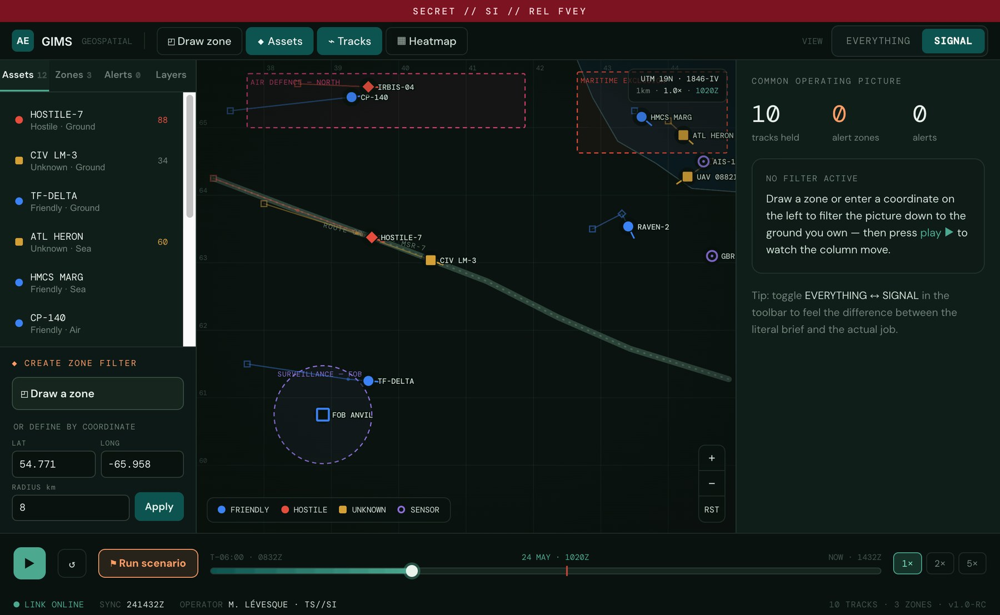
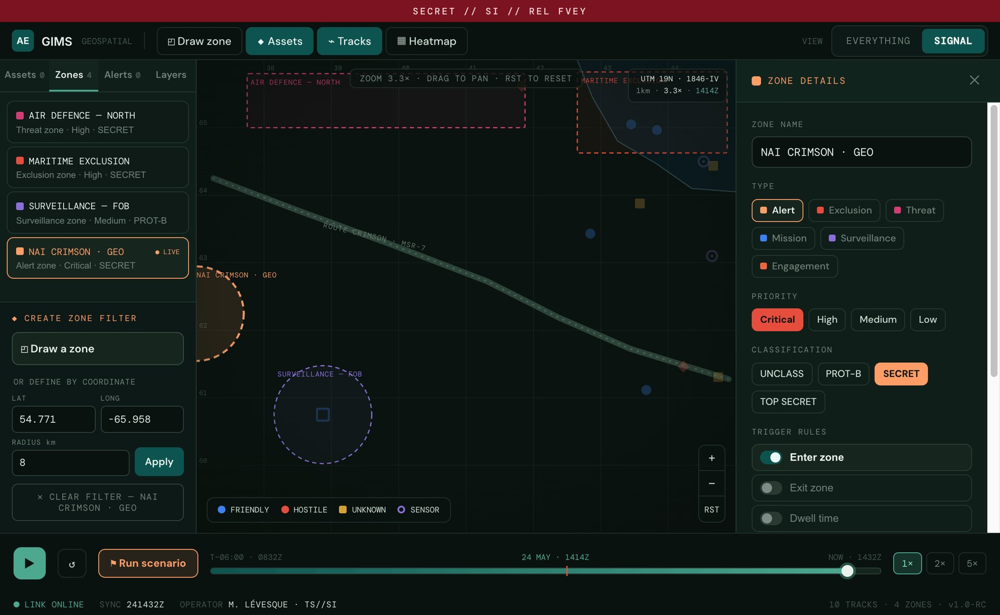
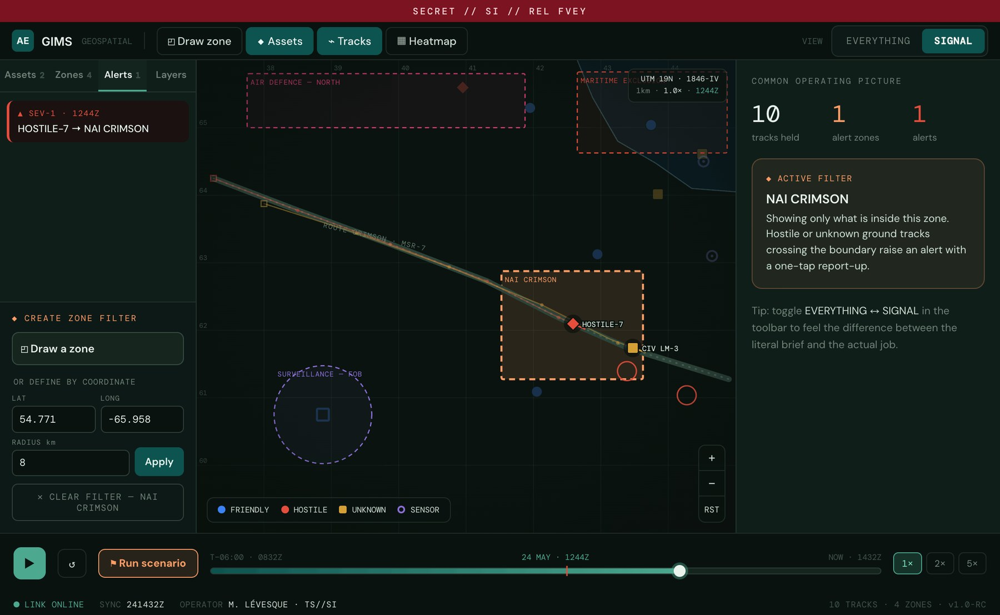
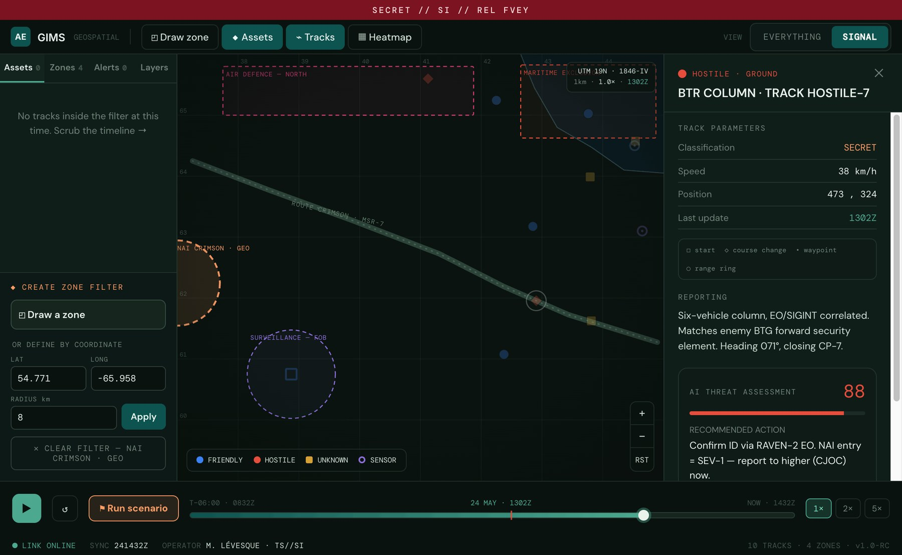

That's roughly how the requirement arrives, from leadership, through a contract, with a lot left unsaid. From those words the obvious build almost designs itself: a map, a search box, every track rendered. It demos beautifully, and under pressure it's noise.
The answer: let the operator define the ground they own, draw it or type its coordinates, and make that area the filter. Entry into it becomes the alert.
The catch is the conditions this thing actually runs in. I wrote them down before designing anything.
Built literally, the map answers "where is everything?", friendly patrols, civilian traffic, maritime contacts, air tracks, sensors, all live at once. In a quiet office you can scan it. In a command vehicle on a bad link, mid-task, it's noise. The operator becomes a search engine for their own battlespace.

A single soldier is responsible for one segment of a route. Their job isn't to survey the whole theatre, it's to notice the moment something hostile crosses into their ground, and tell leadership, fast.
When an enemy vehicle enters the ground I'm responsible for, alert me and help me report it up the chain, without making me hunt for it.
The interface should be built out of exactly those three things, and nothing else by default.
Asked how I'd solve it, I didn't reach for a better map. I reached for a filter: stop presenting the whole battlespace, let the operator declare the area that matters, and let everything else fall to context.
Two ways into the same filter, and what happens the moment a hostile column crosses the line.



The honest question for any feature: does it still function when the network doesn't? For the zone filter, the answer has to be yes.
Map packs, elevation and imagery load before the device leaves the wire. Panning, zooming, and drawing a zone need no connection.
"Is this track inside my zone?" runs locally every update, and the threat model is an on-device build. Both fire with the antenna unplugged.
One tap composes a structured contact report and hands it to the datalink. If no bearer is live, it queues and sends on next contact.
Draw a zone over the route, or define it by coordinates. Toggle Everything ↔ Signal. Press play and watch the column enter. Click any track for its assessment.